9.4 Spring Boot集成RocketMQ
RocketMQ是由阿里巴巴开源到Apache的一个Java语言的分布式消息中间件，支持事务消息、顺序消息、批量消息、定时消息、消息回溯等。它里面有几个区别于标准消息中件间的概念，如Group、Topic、Queue等。系统组成则有Producer、Consumer、Broker、NameServer等。
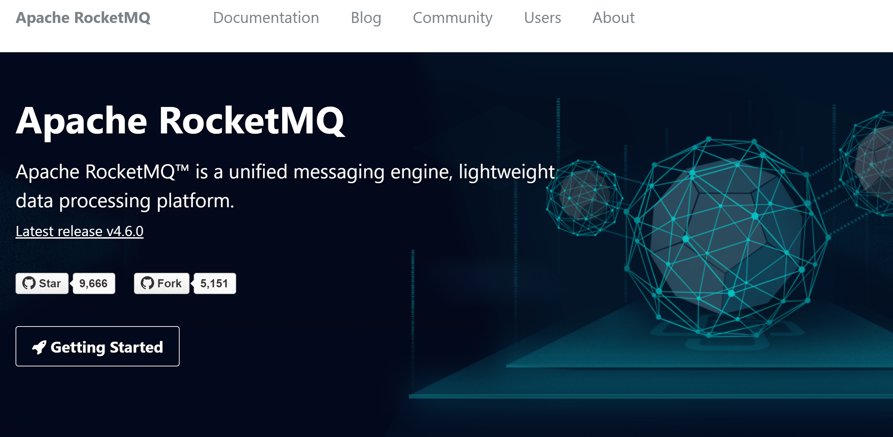
RocketMQ的主要特点：
- 支持发布/订阅（Pub/Sub）和点对点（P2P）消息模型。
- 在一个队列中可靠的先进先出（FIFO）和严格的顺序传递 （RocketMQ可以保证严格的消息顺序，而ActiveMQ无法保证）。
- 支持拉（pull）和推（push）两种消息模式 （Push好理解，比如在消费者端设置Listener回调；而Pull，控制权在于应用，即应用需要主动的调用拉消息方法从Broker获取消息，这里面存在一个消费位置记录的问题（如果不记录，会导致消息重复消费））。
- 单一队列百万消息的堆积能力（RocketMQ提供亿级消息的堆积能力，这不是重点，重点是堆积了亿级的消息后，依然保持写入低延迟）。
- 支持多种消息协议，如 JMS、MQTT 等。
- 分布式高可用的部署架构，满足至少一次消息传递语义（RocketMQ原生就是支持分布式的，而ActiveMQ原生存在单点性）。
- 提供 docker 镜像用于隔离测试和云集群部署。
- 提供配置、指标和监控等功能丰富的 Dashboard。
RocketMQ以Topic来管理不同应用的消息，对于生产者（producer）而言，发送消息时需要指定消息的Topic，对于消费者（consumer）而言，在启动后需要订阅相应的Topic，然后可以消费相应的消息。Topic是逻辑上的概念，在物理实现上，一个Topic由多个Queue组成，采用多个Queue的好处是可以将Broker存储分布式化，提高系统性能。
本小节介绍如何安装配置高可用的RocketMQ集群，在Spring Boot中集成使用。
9.4.1 单机安装配置
到官网下载最新版本rocketmq-all-4.6.0-bin-release.zip，然后解压到磁盘，例如C:\Java\rocketmq-all-4.6.0-bin-release。
在Windows的环境变量中配置ROCKETMQ_HOME到RocketMQ的解压目录，例如C:\Java\rocketmq-all-4.6.0-bin-release。
为RocketMQ设置Windows环境变量ROCKETMQ_HOME，指向安装目录C:\Java\rocketmq-all-4.6.0-bin-release。
执行bin目录下的mqnamesrv.cmd，启动name server。
C:\Java\rocketmq-all-4.6.0-bin-release\bin>mqnamesrv.cmd
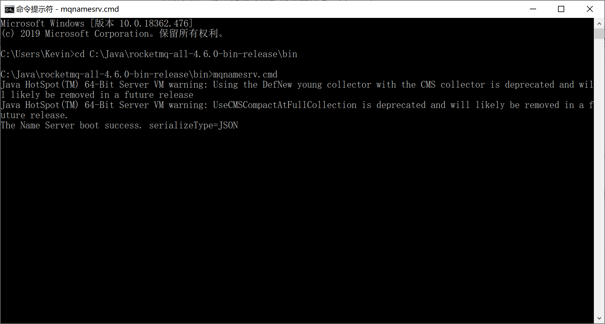
执行bin目录下的mqbroker.cmd，启动BROKER。
C:\Java\rocketmq-all-4.6.0-bin-release\bin>mqbroker.cmd -n 127.0.0.1:9876 autoCreateTopicEnable=true
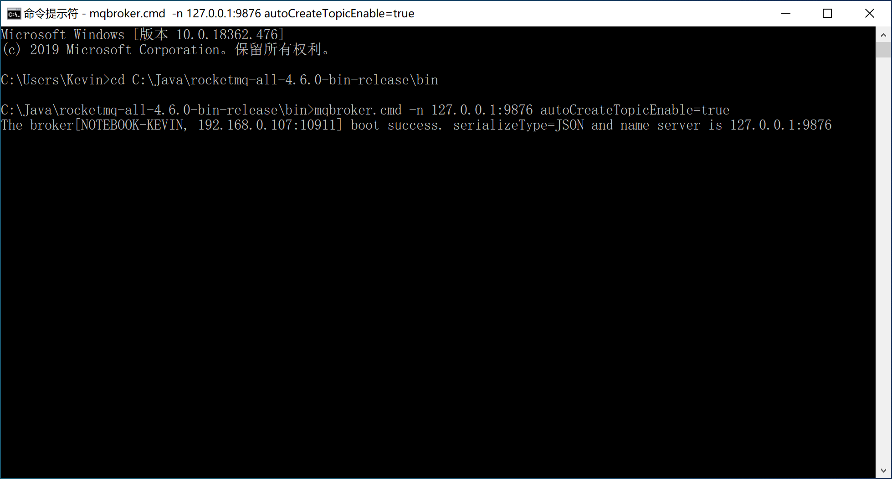
为了方便后续对RocketMQ的监控，可以选择安装RocketMQ社区提供的管理控制台。
rocketmq-externals项目由社区维护了很多RocketMQ相关的扩展/集成支持，其中的rocketmq-console子项目是一个可视化的管理控制台。
执行git clone命令，将项目版本库克隆到本地。
git clone https://github.com/apache/rocketmq-externals.git
进入rocketmq-console子项目的目录，maven编译。
mvn clean package -Dmaven.test.skip=true
进入target目录执行java -jar命令（在命令行中指定服务器端口和RocketMQ的name server地址），启动RocketMQ管理控制台。
java -jar rocketmq-console-ng-1.0.1.jar --server.port=80 --rocketmq.config.namesrvAddr=127.0.0.1:9876
打开浏览器，输入http://localhost/就可以访问到RocketMQ的控制台。
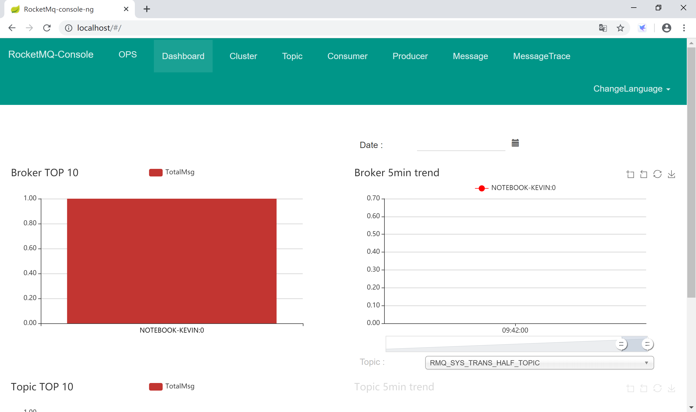
9.4.2 高可用集群
RocketMQ天生对集群的支持非常友好，在其安装包的conf目录下就带了“2主-2从同步”和“2主-2从异步”的配置参考文件。
RocketMQ的服务模式有如下几种：
- 单Master
- 优点：除了配置简单没什么优点。
- 缺点：不可靠，该机器重启或宕机，将导致整个服务不可用。
- 多Master
- 优点：配置简单，性能最高。
- 缺点：可能会有少量消息丢失（配置相关），单台机器重启或宕机期间，该机器上面未被消费的消息在机器恢复前不可订阅，影响消息实时性。
- 多Master多Slave异步模式：每个Master配一个Slave，有多对Master-Slave，集群采用异步复制方式，主备有短暂（毫秒级）消息延迟
- 优点：性能同多Master几乎一样，实时性高，主备间切换对应用透明，不需人工干预。
- 缺点：Master宕机或磁盘损坏时会有少量消息丢失。
- 多Master多Slave同步模式：每个Master配一个Slave，有多对Master-Slave，集群采用同步双写方式，主备都写成功，向应用返回成功
- 优点：服务可用性与数据可用性非常高。
- 缺点：性能比异步集群略低，当前版本主宕备不能自动切换为主。
下面我们以“2namesrv-2master-2slave异步刷盘消息队列集群”为例来讲解RocketMQ的集群配置，以官方发布包rocketmq-all-4.6.0-bin-release\conf\2m-2s-async下的参考配置文件为基础，并根据自生集群情况进行了修改。
9.4.2.1 配置
六台服务器都部署在本地机器上，名称、端口信息规划如下：
| 服务器名称 | IP地址 | 端口 | 用途 |
|---|---|---|---|
| nameserver-a | 127.0.0.1 | 9876 | Name Server |
| nameserver-b | 127.0.0.1 | 9877 | Name Server |
| broker-a | 127.0.0.1 | 10850 | Broker Server（主） |
| broker-a-s | 127.0.0.1 | 10880 | Broker Server（从） |
| broker-b | 127.0.0.1 | 10950 | Broker Server（主） |
| broker-b-s | 127.0.0.1 | 10980 | Broker Server（从） |
为两个broker主从服务器创建数据存储目录\rocketmq-all-4.6.0-bin-release\data\broker-a和\rocketmq-all-4.6.0-bin-release\data\broker-b，并分别在其下创建如下目录：
- store：存放broker master的数据；
- store\slave：存放broker slave的数据；
- store\commitlog：存放提交日志数据；
brokerIP1 当前broker监听的IP；
brokerIP2 存在broker主从时，在broker主节点上配置了brokerIP2的情况下，broker从节点会连接主节点配置的brokerIP2来同步。
因为是在一台机器上运行六个服务器实例（学习测试用），所以，将服务器启动脚本中jvm对内存的要求调小：
- 修改RocketMQ bin目录下的
runserver.cmd，将内存修改为：-server -Xms256m -Xmx256m -Xmn128m -XX:MetaspaceSize=128m -XX:MaxMetaspaceSize=320m； - 修改RocketMQ bin目录下的
runbroker.cmd，将内存修改为：-server -Xms256m -Xmx256m -Xmn128m；
配置Name Server A，nameserver-a.properties：
listenPort=9876
配置Name Server B，nameserver-b.properties：
listenPort=9877
配置broker-a master，broker-a.properties：
brokerClusterName=DefaultCluster
brokerName=broker-a
brokerId=0
deleteWhen=04
fileReservedTime=48
brokerRole=ASYNC_MASTER
flushDiskType=ASYNC_FLUSH
namesrvAddr=127.0.0.1:9876;127.0.0.1:9877
listenPort=10850
brokerIP1=127.0.0.1
brokerIP2=127.0.0.1
storePathRootDir=C:/Java/rocketmq-all-4.6.0-bin-release/data/broker-a/store
storePathCommitLog=C:/Java/rocketmq-all-4.6.0-bin-release/data/broker-a/store/commitlog
配置broker-a slave，broker-a-s.properties：
brokerClusterName=DefaultCluster
brokerName=broker-a
brokerId=1
deleteWhen=04
fileReservedTime=48
brokerRole=SLAVE
flushDiskType=ASYNC_FLUSH
namesrvAddr=127.0.0.1:9876;127.0.0.1:9877
listenPort=10880
brokerIP1=127.0.0.1
storePathRootDir=C:/Java/rocketmq-all-4.6.0-bin-release/data/broker-a/store/slave
storePathCommitLog=C:/Java/rocketmq-all-4.6.0-bin-release/data/broker-a/store/commitlog
配置broker-b master，broker-b.properties：
brokerClusterName=DefaultCluster
brokerName=broker-b
brokerId=0
deleteWhen=04
fileReservedTime=48
brokerRole=ASYNC_MASTER
flushDiskType=ASYNC_FLUSH
namesrvAddr=127.0.0.1:9876;127.0.0.1:9877
listenPort=10950
brokerIP1=127.0.0.1
brokerIP2=127.0.0.1
storePathRootDir=C:/Java/rocketmq-all-4.6.0-bin-release/data/broker-b/store
storePathCommitLog=C:/Java/rocketmq-all-4.6.0-bin-release/data/broker-b/store/commitlog
配置broker-b slave，broker-b-s.properties：
brokerClusterName=DefaultCluster
brokerName=broker-b
brokerId=1
deleteWhen=04
fileReservedTime=48
brokerRole=SLAVE
flushDiskType=ASYNC_FLUSH
namesrvAddr=127.0.0.1:9876;127.0.0.1:9877
listenPort=10980
brokerIP1=127.0.0.1
storePathRootDir=C:/Java/rocketmq-all-4.6.0-bin-release/data/broker-b/store/slave
storePathCommitLog=C:/Java/rocketmq-all-4.6.0-bin-release/data/broker-b/store/commitlog
9.4.2.2 启动
配置完集群后，依次启动name server（两台），broker-a（主从）和broker-b（主从）等六台服务器。
启动两台name server：
mqnamesrv.cmd -c ../conf/2m-2s-async/nameserver-a.properties
mqnamesrv.cmd -c ../conf/2m-2s-async/nameserver-b.properties
启动broker-a主从服务器：
mqbroker.cmd -c ../conf/2m-2s-async/broker-a.properties
mqbroker.cmd -c ../conf/2m-2s-async/broker-a-s.properties
启动broker-b主从服务器：
mqbroker.cmd -c ../conf/2m-2s-async/broker-b.properties
mqbroker.cmd -c ../conf/2m-2s-async/broker-b-s.properties
9.4.2.3 检查
连接到任一Name Server查看集群信息：
mqadmin.cmd clusterList -n 127.0.0.1:9876
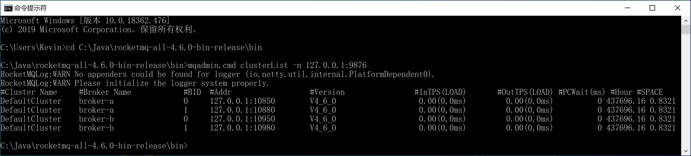
启动管理控制台：
java -jar rocketmq-console-ng-1.0.1.jar --server.port=80 --rocketmq.config.namesrvAddr=127.0.0.1:9876;127.0.0.1:9877
通过控制台可以看到集群信息。
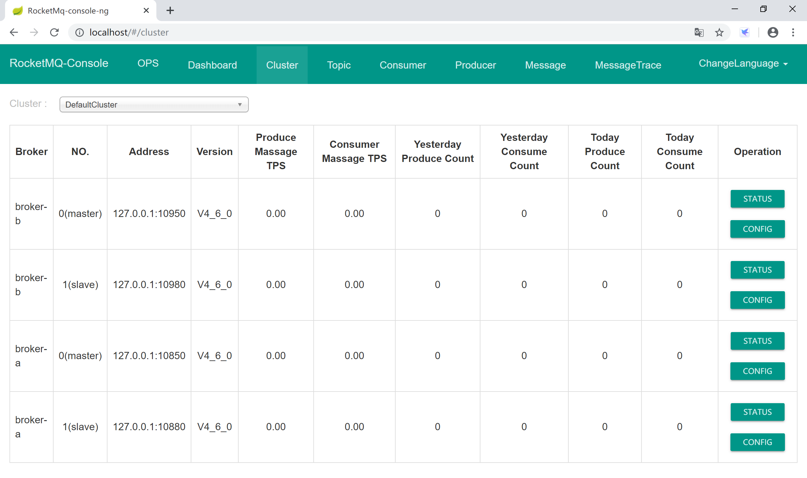
9.4.3 与Spring Boot集成
为了方便在Spring Boot中集成RocketMQ，官方提供了Spring Boot的starter。
9.4.3.1 单机环境
新建Spring Boot项目，添加Spring Web启动器依赖。
Spring Boot官方没有提供RocketMQ的starter，由RocketMQ官方提供starter，从
rocketmq-spring-boot-starter命名上可以看出来，和MyBatis的命令类似。
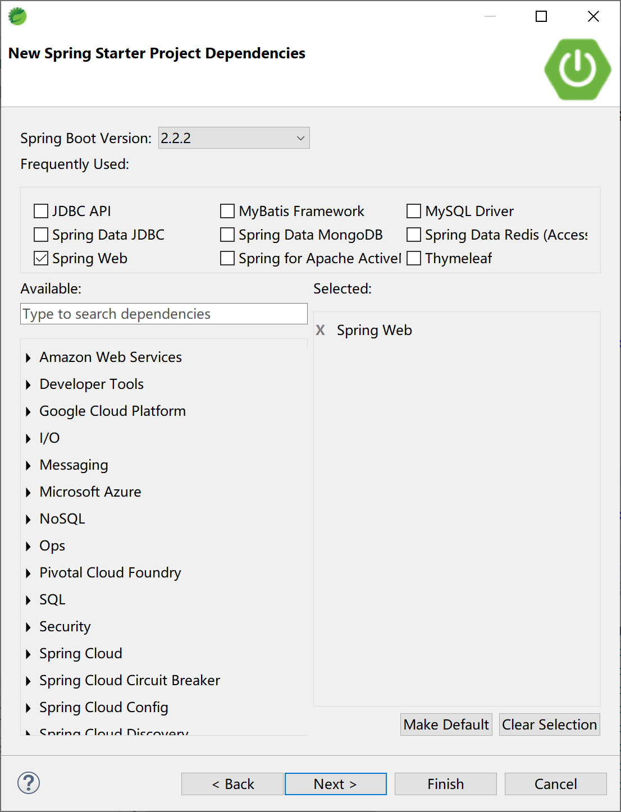
然后，在pom文件中手工添加RocketMQ的启动器依赖。
<dependency>
<groupId>org.apache.rocketmq</groupId>
<artifactId>rocketmq-spring-boot-starter</artifactId>
<version>2.0.4</version>
</dependency>
在application.yml文件中，添加到RocketMQ的连接信息。
rocketmq:
name-server: 127.0.0.1:9876
producer:
send-message-timeout: 300000
group: my-group
创建消息提供者RocketProducer，注入RocketMQTemplate类。
package com.example.rocketmq.producer;
import org.apache.rocketmq.spring.core.RocketMQTemplate;
import org.springframework.beans.factory.annotation.Autowired;
import org.springframework.stereotype.Component;
@Component
public class RocketProducer {
@Autowired
private RocketMQTemplate rocketMQTemplate;
public void sendMessage(String msg) {
rocketMQTemplate.convertAndSend("test-topic",msg);
}
}
创建消息消费者RocketConsumer，实现RocketMQListener接口。
使用@RocketMQMessageListener注解，连接到RocketMQ的test-topic主题，监听消息。
package com.example.rocketmq.consumer;
import org.apache.rocketmq.spring.annotation.RocketMQMessageListener;
import org.apache.rocketmq.spring.core.RocketMQListener;
import org.springframework.stereotype.Component;
@Component
@RocketMQMessageListener(consumerGroup = "my-consumer_test-topic", topic = "test-topic")
public class RocketConsumer implements RocketMQListener<String> {
@Override
public void onMessage(String message) {
System.out.println("RocketMQ Consumer consume message: " + message);
}
}
创建控制器RocketController类，和用户交互，向RocketMQ发送消息。
package com.example.rocketmq.controller;
import org.springframework.beans.factory.annotation.Autowired;
import org.springframework.web.bind.annotation.RequestMapping;
import org.springframework.web.bind.annotation.RestController;
import com.example.rocketmq.producer.RocketProducer;
@RestController
@RequestMapping("/rocketmq/")
public class RocketController {
@Autowired
RocketProducer rocketProducer;
@RequestMapping("/send")
public String sendMsg(String msg) {
rocketProducer.sendMessage(msg);
return msg + " Sended to test-topic.";
}
}
按照9.4.1小节中的单机RocketMQ服务器启动，然后启动Spring Boot应用。
C:\Java\rocketmq-all-4.6.0-bin-release\bin>mqnamesrv.cmd
C:\Java\rocketmq-all-4.6.0-bin-release\bin>mqbroker.cmd -n 127.0.0.1:9876 autoCreateTopicEnable=true
打开浏览器，输入http://localhost:8080/rocketmq/send?msg=Kevin is a GOODMAN.，向RocketMQ发送消息。
观察Spring Boot的控制台，检查消息消费者通过System.out打印出来的消息。
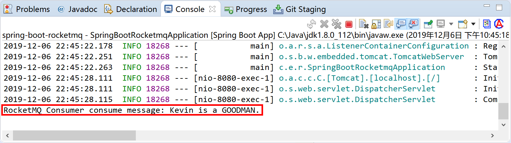
可以通过RocketMQ管理控制台查看消息的生产者信息：
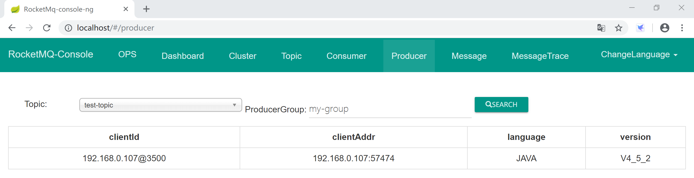
通过RocketMQ管理控制台查看消息的消费者信息：
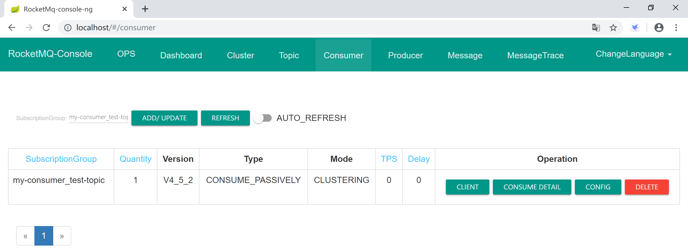
9.4.3.2 集群环境
修改上面“9.4.3.1 单机环境”小节创建的Spring Boot项目的配置文件application.yml，将name-server连接信息修改为集群的两个Name Server配置即可，其他所有代码都不需要修改。
rocketmq:
name-server: 127.0.0.1:9876;127.0.0.1:9877
producer:
send-message-timeout: 300000
group: my-group
测试运行，检查程序和集群是否正常匹配工作。
通过浏览器发送消息：
在Spring Boot的控制台中，检查消息消费者打印出来的信息：
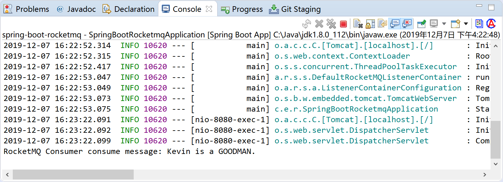
在RocketMQ管理控制台中，可以看到这条消息是由broker-b接收和处理的。
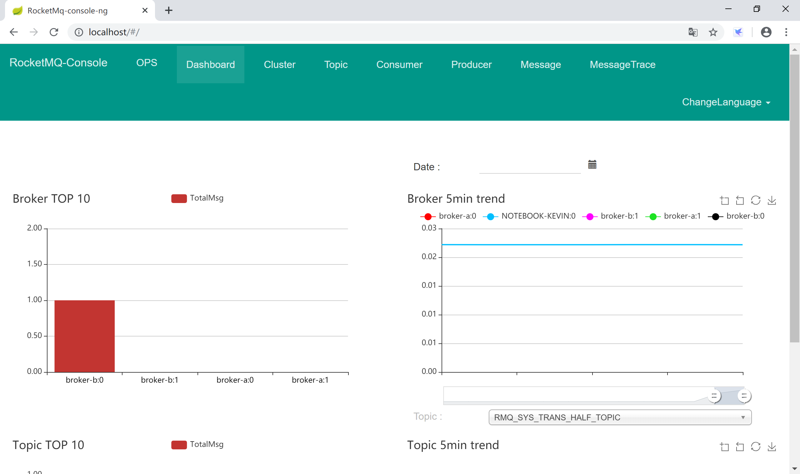
本小节示例项目代码：
https://github.com/gyzhang/SpringBootCourseCode/tree/master/spring-boot-rocketmq